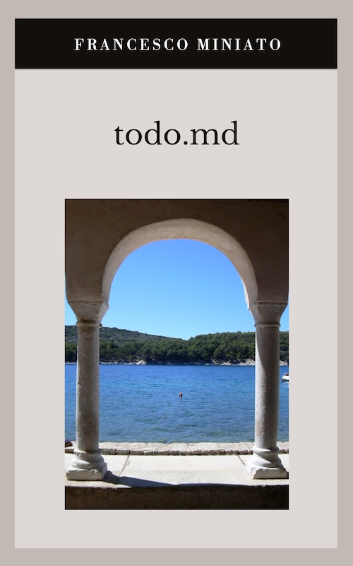

Libri
todo.md: Storia della lingua invisibile in cui gli uomini scrivono e le macchine ricordano. Lo trovi su Amazon in versione cartacea.

«Mi fido, anzi no»: lo trovi su Amazon in versione cartacea o eBook. Spero ti faccia venire qualche dubbio in più.

Chi vuole verificare gli strumenti del laboratorio descritti nel libro li trova qui, su GitHub.